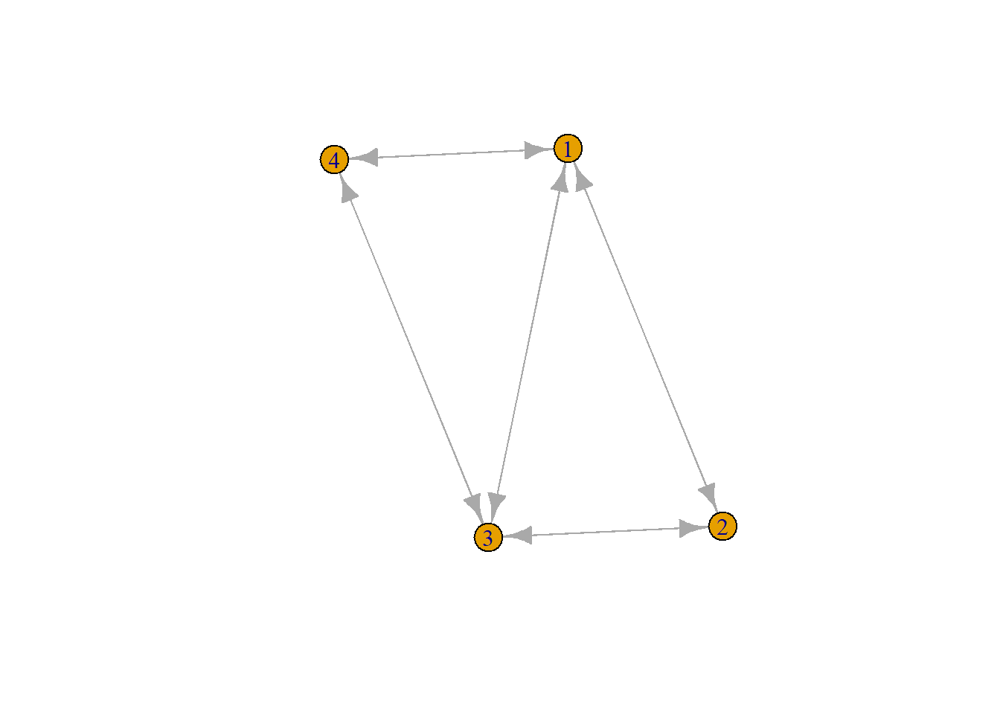
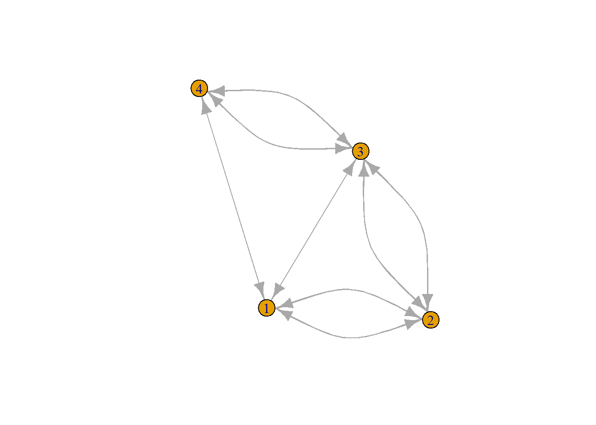

library(igraph)
Last compiled on september, 2025
#In class
# install.packages('formatR')
numbers <- sample(x = (0:1), size = 16, replace = T)
net1 <- matrix(data = numbers, nrow = 4, ncol = 4)
diag(net1) <- NA
net1
#> [,1] [,2] [,3] [,4]
#> [1,] NA 1 0 1
#> [2,] 0 NA 0 0
#> [3,] 0 0 NA 1
#> [4,] 1 1 0 NA
mean(rowSums(net1, na.rm = T))
#> [1] 1.25
density <- (sum(rowSums(net1, na.rm = T)))/16
density
#> [1] 0.3125
# reciprocity
net1 <- (t(net1) + net1)
num_twos <- sum(net1 == 2, na.rm = TRUE)
num_ones_twos <- sum(net1 %in% c(1, 2), na.rm = TRUE)
reciprocity <- num_twos/num_ones_twos
reciprocity
#> [1] 0.25
set.seed(123643)
net_ex <- matrix(sample(0:1, 16, replace = T), nrow = 4, ncol = 4)
diag(net_ex) <- 0
net_ex_un <- net_ex + t(net_ex)
net_ex_un[net_ex_un == 2] <- 1
diag(net_ex_un) <- 0
net_ex_un
#> [,1] [,2] [,3] [,4]
#> [1,] 0 1 1 1
#> [2,] 1 0 1 0
#> [3,] 1 1 0 1
#> [4,] 1 0 1 0
netG <- graph_from_adjacency_matrix(net_ex_un)
transitivity(netG)
#> [1] 0.75
plot <- plot(netG)

net_ex <- (t(net_ex) + net_ex)
num_twos <- sum(net_ex == 2, na.rm = TRUE)
num_ones_twos <- sum(net_ex %in% c(1, 2), na.rm = TRUE)
reciprocity <- num_twos/num_ones_twos
reciprocity
#> [1] 0.6
# ?igraph
netG_d <- graph_from_adjacency_matrix(net_ex)
dyad_census(netG_d)
#> $mut
#> [1] 5
#>
#> $asym
#> [1] 0
#>
#> $null
#> [1] 1
triad_census(netG_d)
#> [1] 0 0 0 0 0 0 0 0 0 0 2 0 0 0 0 2
plot(netG_d)

Homework
Introduction
The principle of homophily refers to the larger likelihood of
observing a positive relationship between two people who are similar. In
the world of academic research, this principle also applies. For
example, we see that researchers with greater physical proximity or the
same gender are more likely to collaborate (Horta et al., 2022). Given
the different positions researchers can hold in universities, this
raises the question to what extent this same goes for researchers of
similar positions.There are several reasons why this might occur.
Researcher of similar posiitons might prefer to work with other
researchers with a similar level (selection), or working together with a
reserahcer of a higher level might influence a researcher to promote
(influence).
If this homophily structure exists, this raises the question what the
consequences are of this structure of collaberations on papers. Other
researchers might prefer to cite papers by researchers of a higher
position. Furthermore, working with researchers of a higher position
might influence these researchers in such a way that their future papers
will be cited more often.
#RQs
(Descriptive) RQ1: To what degree is there position homophily in
publication collaberations between social science researchers in the
Netherlands?
(Explanatory) RQ2: How does the position composition of a
researcher’s egonet (paper collaberations / department influence a
researcher’s citations?
(Explanatory) RQ3: How does the position composition of a paper
influence the number of citations of the paper?
#Data needed
Node characteristics: position, citations, affiliation.
Relational attributes: who collaberated with whom, paper
citations.
LS0tDQp0aXRsZTogIldlZWsgMiINCiNiaWJsaW9ncmFwaHk6IHJlZmVyZW5jZXMuYmliDQpkYXRlOiAiMjAyNS0wOS0xMiINCi0tLQ0KDQpgYGB7ciwgZ2xvYmFsc2V0dGluZ3MsIGVjaG89RkFMU0UsIHdhcm5pbmc9RkFMU0UsIHJlc3VsdHM9J2hpZGUnfQ0KbGlicmFyeShrbml0cikNCg0Ka25pdHI6Om9wdHNfY2h1bmskc2V0KGVjaG8gPSBUUlVFKQ0Kb3B0c19jaHVuayRzZXQodGlkeS5vcHRzPWxpc3Qod2lkdGguY3V0b2ZmPTEwMCksdGlkeT1UUlVFLCB3YXJuaW5nID0gRkFMU0UsIG1lc3NhZ2UgPSBGQUxTRSxjb21tZW50ID0gIiM+IiwgY2FjaGU9VFJVRSwgY2xhc3Muc291cmNlPWMoInRlc3QiKSwgY2xhc3Mub3V0cHV0PWMoInRlc3QyIikpDQpvcHRpb25zKHdpZHRoID0gMTAwKQ0KcmdsOjpzZXR1cEtuaXRyKCkNCg0KDQoNCmNvbG9yaXplIDwtIGZ1bmN0aW9uKHgsIGNvbG9yKSB7c3ByaW50ZigiPHNwYW4gc3R5bGU9J2NvbG9yOiAlczsnPiVzPC9zcGFuPiIsIGNvbG9yLCB4KSB9DQoNCmBgYA0KDQpgYGB7ciBrbGlwcHksIGVjaG89RkFMU0UsIGluY2x1ZGU9VFJVRX0NCmtsaXBweTo6a2xpcHB5KHBvc2l0aW9uID0gYygndG9wJywgJ3JpZ2h0JykpDQoja2xpcHB5OjprbGlwcHkoY29sb3IgPSAnZGFya3JlZCcpDQoja2xpcHB5OjprbGlwcHkodG9vbHRpcF9tZXNzYWdlID0gJ0NsaWNrIHRvIGNvcHknLCB0b29sdGlwX3N1Y2Nlc3MgPSAnRG9uZScpDQpgYGANCg0KYGBge3J9DQpsaWJyYXJ5KGlncmFwaCkNCmBgYA0KDQoNCkxhc3QgY29tcGlsZWQgb24gYHIgZm9ybWF0KFN5cy50aW1lKCksICclQiwgJVknKWANCg0KPGJyPg0KDQojSW4gY2xhc3MNCg0KYGBge3J9DQojaW5zdGFsbC5wYWNrYWdlcygiZm9ybWF0UiIpDQoNCm51bWJlcnM8LSBzYW1wbGUoeD0oMDoxKSwgc2l6ZSA9IDE2LCByZXBsYWNlID0gVCkNCm5ldDEgPC0gbWF0cml4KGRhdGE9bnVtYmVycywgbnJvdz00LCBuY29sPTQpDQpkaWFnKG5ldDEpIDwtIE5BDQpuZXQxDQoNCm1lYW4ocm93U3VtcyhuZXQxLCBuYS5ybT1UKSkNCg0KZGVuc2l0eSA8LSAoc3VtKHJvd1N1bXMobmV0MSwgbmEucm09VCkpKS8xNg0KDQpkZW5zaXR5DQoNCg0KI3JlY2lwcm9jaXR5DQpuZXQxIDwtICh0KG5ldDEpICsgbmV0MSkNCg0KbnVtX3R3b3MgPC0gc3VtKG5ldDEgPT0gMiwgbmEucm0gPSBUUlVFKQ0KDQpudW1fb25lc190d29zIDwtIHN1bShuZXQxICVpbiUgYygxLCAyKSwgbmEucm0gPSBUUlVFKQ0KDQpyZWNpcHJvY2l0eSA8LSBudW1fdHdvcyAvIG51bV9vbmVzX3R3b3MNCnJlY2lwcm9jaXR5DQoNCg0KDQpzZXQuc2VlZCgxMjM2NDMpDQpuZXRfZXggPC0gbWF0cml4KHNhbXBsZSgwOjEsIDE2LCByZXBsYWNlID0gVCksIG5yb3cgPSA0LCBuY29sPTQpDQpkaWFnKG5ldF9leCkgPC0gMA0KbmV0X2V4X3VuIDwtIG5ldF9leCArIHQobmV0X2V4KQ0KbmV0X2V4X3VuW25ldF9leF91biA9PSAyXSA8LSAxDQpkaWFnKG5ldF9leF91bikgPC0gMA0KbmV0X2V4X3VuDQoNCm5ldEcgPC0gZ3JhcGhfZnJvbV9hZGphY2VuY3lfbWF0cml4KG5ldF9leF91bikNCnRyYW5zaXRpdml0eSAobmV0RykNCnBsb3QgPC0gcGxvdChuZXRHKQ0KDQoNCm5ldF9leCA8LSAodChuZXRfZXgpICsgbmV0X2V4KQ0KDQoNCm51bV90d29zIDwtIHN1bShuZXRfZXggPT0gMiwgbmEucm0gPSBUUlVFKQ0KDQpudW1fb25lc190d29zIDwtIHN1bShuZXRfZXggJWluJSBjKDEsIDIpLCBuYS5ybSA9IFRSVUUpDQoNCnJlY2lwcm9jaXR5IDwtIG51bV90d29zIC8gbnVtX29uZXNfdHdvcw0KcmVjaXByb2NpdHkNCg0KYGBgDQoNCg0KYGBge3J9DQojP2lncmFwaA0KDQpuZXRHX2QgPC0gZ3JhcGhfZnJvbV9hZGphY2VuY3lfbWF0cml4KG5ldF9leCkNCg0KZHlhZF9jZW5zdXMobmV0R19kKQ0KdHJpYWRfY2Vuc3VzKG5ldEdfZCkNCg0KcGxvdChuZXRHX2QpDQpgYGANCg0KDQojIEhvbWV3b3JrDQoNCiMgSW50cm9kdWN0aW9uDQpUaGUgcHJpbmNpcGxlIG9mIGhvbW9waGlseSByZWZlcnMgdG8gdGhlIGxhcmdlciBsaWtlbGlob29kIG9mIG9ic2VydmluZyBhIHBvc2l0aXZlIHJlbGF0aW9uc2hpcCBiZXR3ZWVuIHR3byBwZW9wbGUgd2hvIGFyZSBzaW1pbGFyLiBJbiB0aGUgd29ybGQgb2YgYWNhZGVtaWMgcmVzZWFyY2gsIHRoaXMgcHJpbmNpcGxlIGFsc28gYXBwbGllcy4gRm9yIGV4YW1wbGUsIHdlIHNlZSB0aGF0IHJlc2VhcmNoZXJzIHdpdGggZ3JlYXRlciBwaHlzaWNhbCBwcm94aW1pdHkgb3IgdGhlIHNhbWUgZ2VuZGVyIGFyZSBtb3JlIGxpa2VseSB0byBjb2xsYWJvcmF0ZSAoSG9ydGEgZXQgYWwuLCAyMDIyKS4gR2l2ZW4gdGhlIGRpZmZlcmVudCBwb3NpdGlvbnMgcmVzZWFyY2hlcnMgY2FuIGhvbGQgaW4gdW5pdmVyc2l0aWVzLCB0aGlzIHJhaXNlcyB0aGUgcXVlc3Rpb24gdG8gd2hhdCBleHRlbnQgdGhpcyBzYW1lIGdvZXMgZm9yIHJlc2VhcmNoZXJzIG9mIHNpbWlsYXIgcG9zaXRpb25zLlRoZXJlIGFyZSBzZXZlcmFsIHJlYXNvbnMgd2h5IHRoaXMgbWlnaHQgb2NjdXIuIFJlc2VhcmNoZXIgb2Ygc2ltaWxhciBwb3NpaXRvbnMgbWlnaHQgcHJlZmVyIHRvIHdvcmsgd2l0aCBvdGhlciByZXNlYXJjaGVycyB3aXRoIGEgc2ltaWxhciBsZXZlbCAoc2VsZWN0aW9uKSwgb3Igd29ya2luZyB0b2dldGhlciB3aXRoIGEgcmVzZXJhaGNlciBvZiBhIGhpZ2hlciBsZXZlbCBtaWdodCBpbmZsdWVuY2UgYSByZXNlYXJjaGVyIHRvIHByb21vdGUgKGluZmx1ZW5jZSkuIA0KDQpJZiB0aGlzIGhvbW9waGlseSBzdHJ1Y3R1cmUgZXhpc3RzLCB0aGlzIHJhaXNlcyB0aGUgcXVlc3Rpb24gd2hhdCB0aGUgY29uc2VxdWVuY2VzIGFyZSBvZiB0aGlzIHN0cnVjdHVyZSBvZiBjb2xsYWJlcmF0aW9ucyBvbiBwYXBlcnMuIE90aGVyIHJlc2VhcmNoZXJzIG1pZ2h0IHByZWZlciB0byBjaXRlIHBhcGVycyBieSByZXNlYXJjaGVycyBvZiBhIGhpZ2hlciBwb3NpdGlvbi4gRnVydGhlcm1vcmUsIHdvcmtpbmcgd2l0aCByZXNlYXJjaGVycyBvZiBhIGhpZ2hlciBwb3NpdGlvbiBtaWdodCBpbmZsdWVuY2UgdGhlc2UgcmVzZWFyY2hlcnMgaW4gc3VjaCBhIHdheSB0aGF0IHRoZWlyIGZ1dHVyZSBwYXBlcnMgd2lsbCBiZSBjaXRlZCBtb3JlIG9mdGVuLiANCg0KDQojUlFzDQoNCihEZXNjcmlwdGl2ZSkgUlExOiBUbyB3aGF0IGRlZ3JlZSBpcyB0aGVyZSBwb3NpdGlvbiBob21vcGhpbHkgaW4gcHVibGljYXRpb24gY29sbGFiZXJhdGlvbnMgYmV0d2VlbiBzb2NpYWwgc2NpZW5jZSByZXNlYXJjaGVycyBpbiB0aGUgTmV0aGVybGFuZHM/IA0KDQooRXhwbGFuYXRvcnkpIFJRMjogSG93IGRvZXMgdGhlIHBvc2l0aW9uIGNvbXBvc2l0aW9uIG9mIGEgcmVzZWFyY2hlcidzIGVnb25ldCAocGFwZXIgY29sbGFiZXJhdGlvbnMgLyBkZXBhcnRtZW50IGluZmx1ZW5jZSBhIHJlc2VhcmNoZXIncyBjaXRhdGlvbnM/DQoNCihFeHBsYW5hdG9yeSkgUlEzOiBIb3cgZG9lcyB0aGUgcG9zaXRpb24gY29tcG9zaXRpb24gb2YgYSBwYXBlciBpbmZsdWVuY2UgdGhlIG51bWJlciBvZiBjaXRhdGlvbnMgb2YgdGhlIHBhcGVyPw0KDQoNCg0KI0RhdGEgbmVlZGVkDQoNCi0gTm9kZSBjaGFyYWN0ZXJpc3RpY3M6IHBvc2l0aW9uLCBjaXRhdGlvbnMsIGFmZmlsaWF0aW9uLg0KDQotIFJlbGF0aW9uYWwgYXR0cmlidXRlczogd2hvIGNvbGxhYmVyYXRlZCB3aXRoIHdob20sIHBhcGVyIGNpdGF0aW9ucy4NCg0KIyBSZWZlcmVuY2VzDQogIA0KICBIb3J0YSwgSC4sIEZlbmcsIFMuICYgU2FudG9zLCBKLk0uIEhvbW9waGlseSBpbiBoaWdoZXIgZWR1Y2F0aW9uIHJlc2VhcmNoOiBhIHBlcnNwZWN0aXZlIGJhc2VkIG9uIGNvLWF1dGhvcnNoaXBzLiBTY2llbnRvbWV0cmljcyAxMjcsIDUyM+KAkzU0MyAoMjAyMikuIGh0dHBzOi8vZG9pLm9yZy8xMC4xMDA3L3MxMTE5Mi0wMjEtMDQyMjcteg0KDQpgYGB7ciBzZXR1cCwgaW5jbHVkZT1GQUxTRX0NCmtuaXRyOjpvcHRzX2NodW5rJHNldChlY2hvID0gVFJVRSkNCmBgYA0KDQoNCg0K